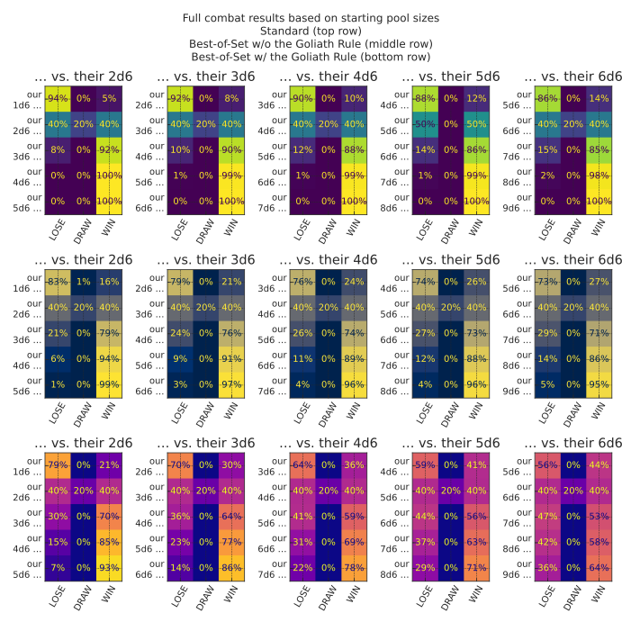
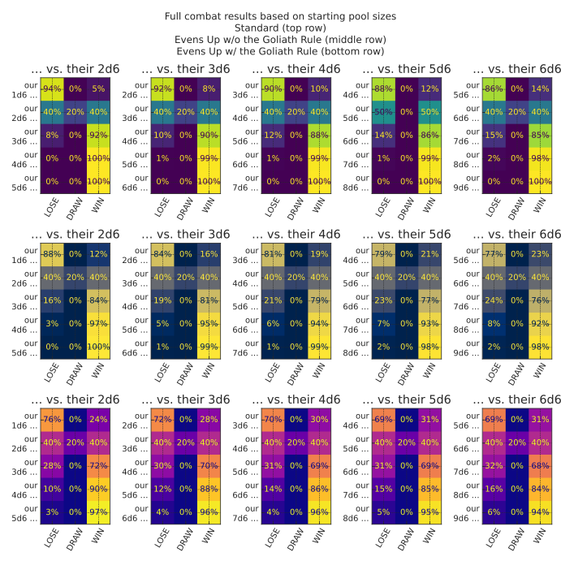

The following examples and translations are intended to showcase dyce’s flexibility.
If you have exposure to another tool, they may also help with transition.
We need to map semantic outcomes to numbers (and back again).
How can we represent those in dyce?
One way is IntEnums.
IntEnums have a property that allows them to substitute directly for ints, which, with a little nudging, is very convenient.
>>>fromenumimportIntEnum>>>classComplication(IntEnum):...NONE=0# this will come in handy later...COMMON=1...UNCOMMON=2...RARE=3...VERY_RARE=4>>>OUTCOME_TO_RARITY_MAP={...2:Complication.VERY_RARE,...3:Complication.VERY_RARE,...4:Complication.VERY_RARE,...5:Complication.RARE,...6:Complication.RARE,...7:Complication.UNCOMMON,...8:Complication.UNCOMMON,...9:Complication.COMMON,...10:Complication.COMMON,...11:Complication.COMMON,...12:Complication.COMMON,...13:Complication.COMMON,...14:Complication.UNCOMMON,...15:Complication.UNCOMMON,...16:Complication.RARE,...17:Complication.RARE,...18:Complication.VERY_RARE,...19:Complication.VERY_RARE,...20:Complication.VERY_RARE,...}
Now let’s use our map to validate the probabilities of a particular outcome using that d8 and d12.
Well butter my butt, and call me a biscuit!
That Angry guy sure knows his math!
Modeling Ironsworn’s core mechanic
Shawn Tomlin’s Ironsworn melds a number of different influences in a fresh way.
Its core mechanic involves rolling an action die (a d6), adding a modifier, and comparing the result to two challenge dice (d10s).
If the modified value from the action die is strictly greater than both challenge dice, the result is a strong success.
If it is strictly greater than only one challenge die, the result is a weak success.
If it is equal to or less than both challenge dice, it’s a failure.
A verbose way to model this is to enumerate the product of the three dice and then perform logical comparisons.
However, if we recognize that our problem involves a dependent probability, we can craft a solution in terms of expand.
We can also deploy a counting trick with the two d10s.
Let’s break it down.
H(10).lt(value) will tell us how often a single d10 is less than value.
12
>>>H(10).lt(5)# how often a d10 is strictly less than 5H({False:6,True:4})
By taking advantage of the fact that, in Python, bools act like ints when it comes to arithmetic operators, we can count how often that happens with more than one interchangeable d10 by “summing” them.
How do we interpret those results?
36 times out of a hundred, neither d10 will be strictly less than five.
48 times out of a hundred, exactly one of the d10s will be strictly less than five.
16 times out of a hundred, both d10s will be strictly less than five.
H(6).gt(H(10)) will compute how often a six-sided die is strictly greater than a ten-sided die.
2 @ H(6).gt(H(10)) will show the frequencies that a first six-sided die is strictly greater than a first ten-sided die and a second six-sided die is strictly greater than a second ten-sided die.
This isn’t quite what we want, since the mechanic calls for rolling a single six-sided die and comparing that result to each of two ten-sided dice.
Now for a twist.
A failure or success is particularly spectacular when the d10s come up doubles.
The key to mapping that to dyce internals is recognizing that we have a dependent probability that involves three independent variables: the (modded) d6, a first d10, and a second d10.
expand is especially useful where there are multiple independent terms.
fromenumimportIntEnumfromdyceimportHResult,PResult,expandfromdyce.dimportd6,p2d10classIronDramaticResult(IntEnum):SPECTACULAR_FAILURE=-1FAILURE=0WEAK_SUCCESS=1STRONG_SUCCESS=2SPECTACULAR_SUCCESS=3defiron_dramatic_dependent_term(action:HResult[int],challenges:PResult[int],*,action_mod:int=0,)->IronDramaticResult:modded_action=action.outcome+action_modassertlen(challenges.roll)==2,"pool must have exactly 2 challenge dice"first_challenge_outcome,second_challenge_outcome=challenges.rollchallenge_doubles=first_challenge_outcome==second_challenge_outcomemodded_action_beats_first_challenge=modded_action>first_challenge_outcomemodded_action_beats_second_challenge=modded_action>second_challenge_outcomeifmodded_action_beats_first_challengeandmodded_action_beats_second_challenge:return(IronDramaticResult.SPECTACULAR_SUCCESSifchallenge_doubleselseIronDramaticResult.STRONG_SUCCESS)elif(modded_action_beats_first_challengeormodded_action_beats_second_challenge):returnIronDramaticResult.WEAK_SUCCESSelse:return(IronDramaticResult.SPECTACULAR_FAILUREifchallenge_doubleselseIronDramaticResult.FAILURE)action_mods=list(range(-1,4))results_by_action_mod={action_mod:expand(iron_dramatic_dependent_term,d6,p2d10,action_mod=action_mod)foraction_modinaction_mods}
By defining our dependent term function to include mod as a keyword-only parameter, we can pass values to it via expand, which is helpful for visualization.
frommatplotlibimportpyplotaspltfromdyce.vizimportplot_burst,plot_linelabels,hs=zip(*attr_results.items(),strict=True)ax_lines=plt.subplot2grid((3,3),(0,0),colspan=3)plot_line(*hs,labels=labels,markers="Ds^*xo",ax=ax_lines)ax_lines.legend()ax_lines.set_title("Comparing various take-three-of-4d6 methods")fori,(label,h)inenumerate(attr_results.items()):ax_burst=plt.subplot2grid((3,3),(1+i//3,i%3))plot_burst(h,title=label,ax=ax_burst)ax_burst.set_title(ax_burst.get_title(),wrap=True)plt.gcf().set_size_inches(9.6,9.6)
frommatplotlibimporttickerfromdyce.vizimportplot_lineax=plot_line(damage_half_on_save)ax.xaxis.set_major_locator(ticker.IndexLocator(base=2,offset=0))ax.set_title("Attack with saving throw for half damage")
>>># VAR name = 1 + 2d3 - 3 * 4d2 // 5>>>name=1+(2@H(3))-3*(4@H(2))//5>>>print(name.format_short()){avg:1.75,-1:3.47%,0:13.89%,1:25.00%,2:29.17%,3:19.44%,4:8.33%,5:0.69%}
1234
>>># VAR out = 3 * ( 1 + 1d4 )>>>out=3*(1+2@H(4))>>>print(out.format_short()){avg:18.00,9:6.25%,12:12.50%,15:18.75%,18:25.00%,21:18.75%,24:12.50%,27:6.25%}
1234
>>># VAR g = (1d4 >= 2) AND !(1d20 == 2)>>>g=H(4).ge(2)&H(20).ne(2)>>>print(g.format_short()){...,False:28.75%,True:71.25%}
1234
>>># VAR h = (1d4 >= 2) OR !(1d20 == 2)>>>h_bool=H(4).ge(2)|H(20).ne(2)>>>print(h_bool.format_short()){...,False:1.25%,True:98.75%}
1234
>>># VAR abs = ABS( 1d6 - 1d6 )>>>abs_h=abs(H(6)-H(6))>>>print(abs_h.format_short()){avg:1.94,0:16.67%,1:27.78%,2:22.22%,3:16.67%,4:11.11%,5:5.56%}
1 2 3 4 5 6 7 8 91011121314
>>># MAX(4d7, 2d10)>>># this takes the max of a pool of four d7s and two d10s>>>fromdyceimportP>>>max_h=P(4@P(7),2@P(10)).h(-1)>>>print(max_h.format_short()){avg:7.78,1:0.00%,2:0.03%,3:0.28%,4:1.40%,5:4.80%,6:12.92%,7:29.57%,8:15.00%,9:17.00%,10:19.00%}>>># this takes the max of pool of a first die behaving like the sum of>>># 4d7 and a second die behaving like a the sum of 2d10, which is a>>># very different thing>>>max_h=P(4@H(7),2@H(10)).h(-1)>>>print(max_h.format_short()){avg:16.60,4:0.00%,5:0.02%,6:0.07%,7:0.21%,...,25:0.83%,26:0.42%,27:0.17%,28:0.04%}
fromdyceimportH,HResult,expandsingle_attack=2@H(6)+5defgwf_2014(result:HResult[int])->H[int]|int:# Re-roll either die if it is a one or tworeturnresult.hifresult.outcomein(1,2)elseresult.outcomedefgwf_2024(result:HResult[int])->H[int]|int:# Ones and twos are promoted to 3sreturn3ifresult.outcomein(1,2)elseresult.outcomeh_gwf_2014=2@expand(gwf_2014,H(6))+5# ty: ignore[unsupported-operator]h_gwf_2024=2@expand(gwf_2024,H(6))+5# ty: ignore[unsupported-operator]
fromcollections.abcimportIteratorfromdyceimportH,Pdefroll_and_keep(p:P[int],k:int)->H[int]:assertall(h==p[0]forhinp),"pool must be homogeneous"max_d=max(p[-1])ifpelse0returnH.from_counts((sum(roll[-k:])+sum(1foroutcomeinroll[:-k]ifoutcome==max_d),count,)forroll,countinp.rolls_with_counts())d,k=6,3defroll_and_keep_hs()->Iterator[tuple[str,H[int]]]:forninrange(k+1,k+9):p=n@P(d)yieldf"{n}d{d} keep {k} add +1",roll_and_keep(p,k)defnormal()->Iterator[tuple[str,H[int]]]:forninrange(k+1,k+9):p=n@P(d)yieldf"{n}d{d} keep {k}",p.h(slice(-k,None))
function:setelementI:ninSEQ:stoN:n{NEW:{}loopJover{1..#SEQ} {ifI=J{NEW:{NEW,N}}else{NEW:{NEW,J@SEQ}}}result:NEW}function:brawlA:svsB:swithoptionalswap{if#A@A >= 1@B {result:[brawlAvsB]}AX:[sort[setelement#A in A to 1@B]]BX:[sort[setelement1inBto#A@A]]result:[brawlAXvsBX]}output[brawl3d6vs3d6withoptionalswap]named"A vs B Damage"
Translation:
1 2 3 4 5 6 7 8 91011121314
>>>defbrawl_w_optional_swap(p_result_a:PResult[int],p_result_b:PResult[int]):...roll_a,roll_b=p_result_a.roll,p_result_b.roll...ifroll_a[0]<roll_b[-1]:...roll_a,roll_b=roll_a[1:]+roll_b[-1:],roll_a[:1]+roll_b[:-1]...# Sort greatest-to-least after the swap...roll_a=tuple(sorted(roll_a,reverse=True))...roll_b=tuple(sorted(roll_b,reverse=True))...else:...# Reverse to be greatest-to-least...roll_a=roll_a[::-1]...roll_b=roll_b[::-1]...a_successes=sum(1forvinroll_aifv>=roll_b[0])...b_successes=sum(1forvinroll_bifv>=roll_a[0])...returna_successes-b_successesor(roll_a>roll_b)-(roll_a<roll_b)
S. John Ross’s Risus and its many community-developed alternative rules not only make for entertaining reading, but are fertile ground for stressing ergonomics and capabilities of any discrete outcome modeling tool.
We can easily model the first round of its opposed combat system for various starting configurations.
Our first step is a callback for H.apply for refereeing a head-to-head contest of values:
fromtypingimportcastimportmatplotlibasmplfrommatplotlibimportpyplotaspltfrompandasimportIndex# See <https://github.com/python/mypy/issues/19169#issuecomment-2920914460>defvs_scenarios_dataframes(# type: ignore[no-redef]us_vs_them_func:VersusFuncT,*,our_pool_rel_sizes:Sequence[int]=tuple(range(-1,2)),their_pool_sizes:Sequence[int]=tuple(range(3,6)),)->ScenariosDataframesT:vs_dfs:list[pd.DataFrame]=[]# The explicit type hint here is apparently needed by mypy for properly resolving# the call to h_vs.merge below.# TODO(posita): # noqa: TD003 - See:# - <https://github.com/python/mypy/issues/21317>h_vs:H[Versus]=H(Versus)fortheir_pool_sizeintheir_pool_sizes:data:dict[str,dict[str,float]]={}forour_pool_rel_sizeinour_pool_rel_sizes:our_pool_size=their_pool_size+our_pool_rel_sizeus_vs_them_results=h_vs.merge(us_vs_them_func(our_pool_size,their_pool_size))data[f"{our_pool_size}d6"]={outcome.name:float(prob)foroutcome,probinus_vs_them_results.probability_items()}df=pd.DataFrame(list(data.values()),columns=[v.nameforvinVersus],index=list(data.keys()),)df.index.name=f"{their_pool_size}d6"vs_dfs.append(df)returnvs_dfs# See <https://github.com/python/mypy/issues/19169#issuecomment-2920914460>defus_vs_them_heatmap_subplot(# type: ignore[no-redef]vs_dfs:ScenariosDataframesT,cmap_name:str="viridis",plt_total_rows:int=1,plt_cur_row:int=0,)->list[Axes]:axes:list[Axes]=[]col_names=[e.nameforeinVersus]cmap=mpl.colormaps[cmap_name]lo_color=cmap(100.0)hi_color=cmap(0.0)fori,dfinenumerate(vs_dfs):df=df.copy()# noqa: PLW2901df.index=Index(data=[f"our\n{idx} …"foridxindf.index],dtype=df.index.dtype,name=f"… vs. their {df.index.name}",)ax=plt.subplot2grid((plt_total_rows,len(vs_dfs)),(plt_cur_row,i),)ax.imshow(df,vmin=0.0,vmax=1.0,cmap=cmap_name)ax.set_xticks(range(len(col_names)),labels=col_names)ax.tick_params(axis="x",labelrotation=60.0)ax.set_yticks(range(len(df.index)),labels=df.index)fory,(_,row)inenumerate(df.iterrows()):forx,valinenumerate(row):ax.text(x,y,f"{val:.0%}",ha="center",va="center",color=hi_colorifval>0.5elselo_color,)ax.set_title(cast("str",df.index.name))axes.append(ax)returnaxes
With a little elbowfinger grease, we can roll up our … erm … fingerless gloves and even model how various starting conditions affect combat completion (in this case, applying dynamic programming to avoid redundant computations).
fromfractionsimportFractionfromfunctoolsimportcachefromdyceimportHResult,expanddefrisus_combat_driver(our_pool_size:int,# our starting pool sizetheir_pool_size:int,# their starting pool sizesingle_round_us_vs_them_func:VersusFuncT=Versus.single_round_us_vs_them,)->H[Versus]:# Preliminary checks before we start recursionifour_pool_size<0ortheir_pool_size<0:raiseValueError(f"cannot have negative numbers (us: {our_pool_size}, "f"them: {their_pool_size})")elifour_pool_size==0andtheir_pool_size==0:# This should not happen unless we are called as# risus_combat_driver(0, 0, ...). In other words, this is the only# case where a combat will result in a draw. This is because, draws# are re-rolled during combat, so eliminate those results below.returnH({Versus.DRAW:1})# The @cache` decorator# (https://docs.python.org/3/library/functools.html#functools.cache)# does simple memoization for us because there are redundancies. For# example, we might compute a case where we lose a die, then our# opposition loses a die. We arrive at a similar case where our# opposition loses a die, then we lose a die. Both cases would be# identical from that point on. In this context, `@cache` helps us avoid# recomputing redundant sub-trees.@cachedef_resolve_us_vs_them_func(our_pool_size:int,# number of dice we still havetheir_pool_size:int,# number of dice they still have)->H[Versus]:assertour_pool_size!=0ortheir_pool_size!=0,("In this function, the case where both parties are at zero is ""considered an error. Because only one party can lose a die ""during each round, the only way both parties can be at zero ""simultaneously is if they both started at zero. Since we guard ""against that case in the enclosing function, we don't have to ""worry about it here. Either our_pool_size is zero, ""their_pool_size is zero, or neither is zero.")ifour_pool_size==0:# Base case: we are out of dice, so they winreturnH({Versus.LOSE:1})iftheir_pool_size==0:# Base case: they are out of dice, so we winreturnH({Versus.WIN:1})# Otherwise, the battle rages on ...this_round_results=single_round_us_vs_them_func(our_pool_size,their_pool_size)# Keeping in mind that we're inside our recursive implementation, we# define a dependent term suitable for dyce.expand, allowing us to# take our computation for this round, and use that machinery to# "fold in" subsequent rounds.def_resolve_next_round_from_this_round(this_round:HResult[Versus],)->H[Versus]:matchthis_round.outcome:caseVersus.LOSE:# We lost this round, so keep going with one fewer die# in our pool (which could now be at zero dice)return_resolve_us_vs_them_func(our_pool_size-1,their_pool_size,)caseVersus.WIN:# They lost this round, so keep going with one fewer die# in their pool (which could now be at zero dice)return_resolve_us_vs_them_func(our_pool_size,their_pool_size-1,)caseVersus.DRAW:# Ignore (i.e., immediately re-roll) all tiesreturnH({})case_:# Should never be hereassertFalse,(# noqa: B011, PT015f"unrecognized this_round.outcome {this_round.outcome}")returnexpand(_resolve_next_round_from_this_round,this_round_results,precision=Fraction(1,0x7FFFFFFF),)# ty: ignore[invalid-return-type]return_resolve_us_vs_them_func(our_pool_size,their_pool_size)
There’s lot going on there.
Thankfully, it’s heavily annotated.
It’s worth going back and dissecting as a fairly nuanced application of expand.
Note
This is a complicated example that involves some fairly sophisticated programming techniques (recursion, memoization, nested functions, etc.).
The point is not to suggest that such techniques are required to be productive.
However, it is useful to show that dyce is flexible enough to model these types of outcomes in a couple dozen lines of code.
It is high-level enough to lean on for nuanced number crunching without a lot of detailed knowledge, while still being low-level enough that authors knowledgeable of advanced programming techniques are not precluded from using them.
When called with its default arguments, risus_combat_driver satisfies the VersusFuncT interface.
This means we can use it directly with our vs_scenarios_dataframes helper to enumerate resolution outcomes from various starting positions.
Using our risus_combat_driver from above, we can craft a alternative resolution function to model the less death-spirally “Best of Set” alternative mechanic from The Risus Companion (free with membership to the IOR) with the optional “Goliath Rule” for resolving ties.
defsingle_round_goliath(h_result:HResult[Versus],*,our_pool_size:int,their_pool_size:int)->Versus:r""" Goliath Rule: Instead of re-rolling ties, the win goes to the party with fewer dice in this round. """return(Versus(# Resolves to 1 if we have fewer dice, -1 if they have fewer# dice, and 0 if we're tiedint(our_pool_size<their_pool_size)-int(our_pool_size>their_pool_size))ifh_result.outcome==Versus.DRAWelseh_result.outcome)assert(single_round_goliath(HResult(h=H(Versus),outcome=Versus.DRAW),our_pool_size=1,their_pool_size=2,)isVersus.WIN)assert(single_round_goliath(HResult(h=H(Versus),outcome=Versus.DRAW),our_pool_size=2,their_pool_size=1,)isVersus.LOSE)assert(single_round_goliath(HResult(h=H(Versus),outcome=Versus.DRAW),our_pool_size=2,their_pool_size=2,)isVersus.DRAW)
Python’s functools.partial allows us to override individual function details, but still leverage our current callback machinery.
This pattern will come up again below, so we’ll capture it in a helper function.
# See <https://github.com/python/mypy/issues/19169#issuecomment-2920914460>defviz_multi_round_goliath_helper(# type: ignore[no-redef]single_round_goliath_func:VersusFuncGoliathT,)->Sequence[Axes]:fromfunctoolsimportpartialall_axes:list[Axes]=[]our_pool_rel_sizes=tuple(range(-1,4))their_pool_sizes=tuple(range(2,7))# Standard combat (for comparison)standard_vs_dfs=vs_scenarios_dataframes(risus_combat_driver,our_pool_rel_sizes=our_pool_rel_sizes,their_pool_sizes=their_pool_sizes,)axes_standard=us_vs_them_heatmap_subplot(standard_vs_dfs,plt_total_rows=3,plt_cur_row=0,cmap_name="viridis",)all_axes.extend(axes_standard)# Without the Goliath Rulerisus_combat_driver_wo_goliath=partial(risus_combat_driver,single_round_us_vs_them_func=partial(single_round_goliath_func,with_goliath_rule=False),)wo_goliath_dfs=vs_scenarios_dataframes(risus_combat_driver_wo_goliath,our_pool_rel_sizes=our_pool_rel_sizes,their_pool_sizes=their_pool_sizes,)axes_wo_goliath=us_vs_them_heatmap_subplot(wo_goliath_dfs,plt_total_rows=3,plt_cur_row=1,cmap_name="cividis",)all_axes.extend(axes_wo_goliath)# With the Goliath Rulerisus_combat_driver_w_goliath=partial(risus_combat_driver,single_round_us_vs_them_func=partial(single_round_goliath_func,with_goliath_rule=True),)w_goliath_dfs=vs_scenarios_dataframes(risus_combat_driver_w_goliath,our_pool_rel_sizes=our_pool_rel_sizes,their_pool_sizes=their_pool_sizes,)axes_w_goliath=us_vs_them_heatmap_subplot(w_goliath_dfs,plt_total_rows=3,plt_cur_row=2,cmap_name="plasma",)all_axes.extend(axes_w_goliath)returnall_axes
We’ll use that Goliath Rule helper to approximate a complete “Best-of-Set” combat and compare it to a “standard” one.
Visualization:
123456789
axes=viz_multi_round_goliath_helper(best_of_set_single_round_us_vs_them)fig=plt.gcf()fig.set_size_inches(9.6,9.6)fig.suptitle("Full combat results based on starting pool sizes\n""Standard (top row)\n""Best-of-Set w/o the Goliath Rule (middle row)\n""Best-of-Set w/ the Goliath Rule (bottom row)")

The “Evens Up” alternative dice mechanic presents some challenges.
First, dyce’s substitution mechanism only resolves outcomes through a fixed number of iterations, so it can only approximate probabilities for infinite series.
Most of the time, the implications are largely theoretical for a sufficient number of iterations.
This is no exception.
Another limitation is that dyce only provides a mechanism to directly expand outcomes, not counts.
This means we can’t arbitrarily increase the likelihood of achieving a particular outcome through replacement.
With some creativity, we can work around that, too.
In the case of “Evens Up”, we need to keep track of whether an even number was rolled, but we also need to keep rolling (and accumulating) as long as sixes are rolled.
This behaves a lot like an exploding die with three values (miss, hit, and hit-and-explode).
Further, we can observe that every “run” will be zero or more exploding hits terminated by either a miss or a non-exploding hit.
If we choose our values carefully, we can encode how many times we’ve encountered relevant events as we explode.
fromdyceimportexplode_nclassEvensUp(IntEnum):MISS=0HIT=1HIT_EXPLODE=2d_evens_up_raw=H((EvensUp.MISS,# 1EvensUp.HIT,# 2EvensUp.MISS,# 3EvensUp.HIT,# 4EvensUp.MISS,# 5EvensUp.HIT_EXPLODE,# 6))d_evens_up_raw_exploded=(explode_n(d_evens_up_raw,n=3,# plenty deep for our needs)+0# make sure everything is an int)print(d_evens_up_raw_exploded)
H({0:648,1:432,2:108,3:72,4:18,5:12,6:3,7:2,8:1})
For every value that is even, we ended in a miss.
For every value that is odd, we ended in a hit that will need to be tallied.
Dividing by two and ignoring any remainder will tell us how many exploding hits we had along the way.
123456789
defevens_up_decode_hits(outcome:int)->int:# Clever math that is equivalent to:# outcome // 2 + # a tally of any exploded hits# outcome % 2 # any final hit # noqa: ERA001return(outcome+1)//2d_evens_up=d_evens_up_raw_exploded.apply(evens_up_decode_hits).lowest_terms()print(d_evens_up.format(width=65,scaled=True))
We’ll use that to approximate a complete “Evens Up” combat, continuing to leveraging our Goliath Rule helper from above.
Visualization:
123456789
axes=viz_multi_round_goliath_helper(evens_up_single_round_us_vs_them)fig=plt.gcf()fig.set_size_inches(9.6,9.6)fig.suptitle("Full combat results based on starting pool sizes\n""Standard (top row)\n""Evens Up w/o the Goliath Rule (middle row)\n""Evens Up w/ the Goliath Rule (bottom row)")

Phew!
What a journey!
Hopefully this highlights some of dyce’s flexibility and capabilities.
If you’d like help using dyce with modeling your own complicated mechanics, drop me a line!